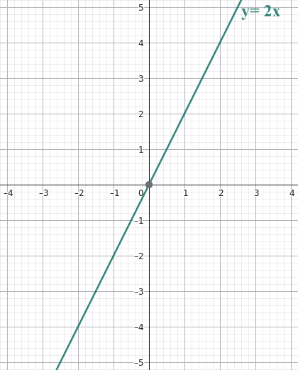
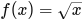
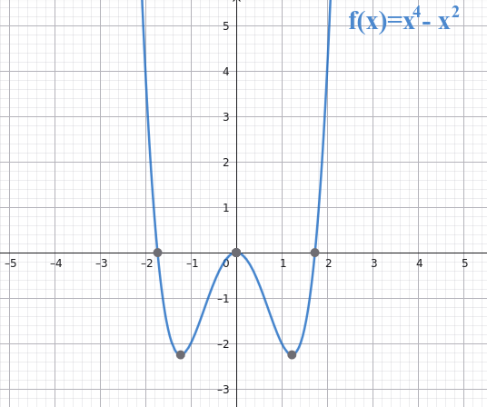
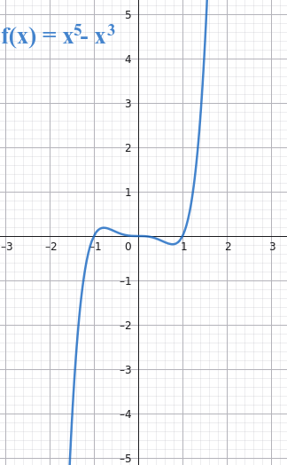
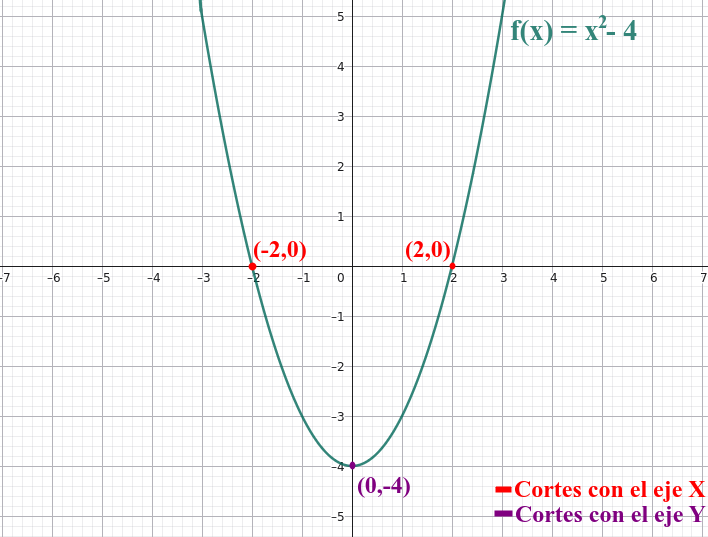
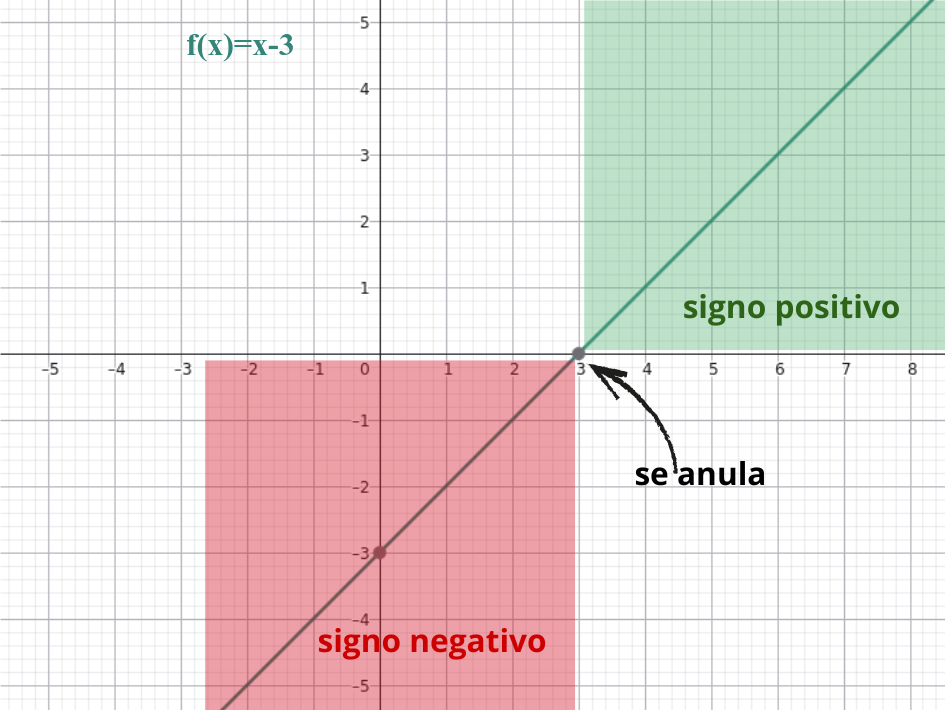

Primera definión de función
Una función es una relación que asigna a cada elemento x de un conjunto A un único elemento y de un conjunto B. Se suele escribir:
f:A→B, f(x)=y
De manera general, trabajar con funciones implica realizar una serie de operaciones sobre el elemento x para obtener el valor de y.
Funciones en forma de tabla, gráfica o expresión algebraica
Una función es una relación entre dos magnitudes, de forma que a cada valor de la variable independiente (x) le corresponde un único valor de la variable dependiente (y = f(x)).
En muchos fenómenos sociales, económicos o demográficos, las funciones permiten modelizar relaciones: el precio según la demanda, el crecimiento de la población, los ingresos según las ventas, etc.
- Función inyectiva:
- Una función es inyectiva cuando cada valor distinto de la variable produce un resultado distinto.
- Es decir: No hay dos elementos del dominio que tengan la misma imagen.
- En forma matemática: f(x1) = f(x2) ⇒ x1 = x2
- Funcion sobreyectiva (o suprayectiva):
- Una función es sobreyectiva cuando llega a todos los valores posibles del codominio.
- Es decir: no deja ningún valor sin usar.
- Imagen sencilla: “Todo lo que puede salir como resultado sale al menos una vez”.
- Función biyectiva:
- Una función es biyectiva cuando es inyectiva y sobreyectiva a la vez.
- En palabras simples: Cada valor del dominio va a un único resultado, y todos los resultados posibles aparecen.
- Imagen sencilla: “Cada elemento tiene su pareja y todas las parejas están ocupadas”.
|

|
|
|
|
|
@talentoargentino Qué es una función #mariaines #profesora #matematica #argentina #talento #fyp #foryou ♬ sonido original - Talento Argentino
En forma de tabla:
Se muestran algunos valores de la variable x y sus correspondientes valores de y. Representa los puntos (x,f(x)) en un plano cartesiano.
Permite visualizar el comportamiento de la función: si crece, decrece, corta los ejes, tiene máximos, mínimos, etc.
Las tablas de valores son muy útiles para ayudar a hacer una representación gráfica correcta de la función. Una técnica para respresentar funciones dada una expresión algebráica es construir una tabla de valores de la función, dándole valores a la variable independiente (x) y calculando los correspondientes valores de la variable dependiente (y).
Ejemplo:
| x | 1 | 2 | 3 | 4 |
| y | 2 | 4 | 6 | 8 |
→ Aquí vemos que y=2x.
En forma de gráfica:
Se dibuja la función en un sistema de ejes cartesianos. La gráfica muestra visualmente cómo varía y al cambiar x.

En el ejemplo anterior, la gráfica sería una recta que pasa por el origen.
En forma algebraica:
Se expresa mediante una fórmula, como y=2x o y=3x2−5x+2.
Cada representación aporta información distinta: la tabla muestra valores concretos, la gráfica da una visión global del comportamiento, y la expresión permite calcular cualquier valor.
Clasificación de los tipos de funciones:
(Algunas de estas familias de funciones se dan en 4ºESO, pero es interesante ir conociendo que existen).
Dominio y recorrido
Dominio
El dominio de una función es el conjunto de valores de la variable independiente (x) para los cuales la función está definida, es decir, aquellos valores que tienen sentido en el contexto del problema o no provocan operaciones imposibles (como dividir entre cero o sacar raíz cuadrada de un número negativo).
En otras palabras:
Dom(f)={x∈ℝ ∣ f(x) tiene significado real}
✳️ Ejemplos:
- f(x)=2x+3 → definida para todos los reales ⇒ Dom(f) = ℝ
 → el denominador no puede ser 0 ⇒ Dom(f) = ℝ − {2}
→ el denominador no puede ser 0 ⇒ Dom(f) = ℝ − {2}- → no se puede calcular raíz de número negativo ⇒ Dom(f) = [0, +∞)
📘 En contextos sociales:
El dominio también se interpreta de forma realista:
- Si x representa el número de productos vendidos, x ≥ 0.
- Si x representa años o personas, no tiene sentido usar valores negativos o fraccionarios.
Recorrido o imagen
El recorrido (también llamado imagen) de una función es el conjunto de valores que puede tomar la variable dependiente (y = f(x)) cuando x recorre su dominio.
Formalmente:
Rec(f)={f(x) ∣ x∈Dom(f)}
✳️ Ejemplos:
- f(x)=2x+3 → los valores de y pueden ser cualquier número real ⇒ Rec(f) = ℝ
- f(x)=x2 → los valores de y son siempre positivos ⇒ Rec(f) = [0, +∞)
- → Rec(f) = [0, +∞)
📘 Interpretación social:
Si una función representa beneficio o demanda, el recorrido nos indica los valores posibles de esa variable en la realidad. Por ejemplo, no puede haber beneficios negativos en algunos modelos, o la demanda puede estar acotada por la capacidad del mercado.
Simetrías
Función par
Una función par es una función simétrica respecto al eje Y. Cumple la condición:
f(−x) = f(x)
para todos los valores de x del dominio de la función.
Ejemplo: f(x)=x4 − x2.
Si cambias x por −x, el valor no cambia: (−x)4 − (−x)2 = x4 −x2.

Función impar
Una función impar es una función simétrica respecto al origen (al girarla 180º alrededor del origen queda igual). Cumple la condición:
f(−x)=−f(x)
para todos los valores de x del dominio.
Ejemplo: f(x)=x5−x3
Si cambias x por −x, el resultado cambia de signo: (−x)5 − (−x)3 = − x5 + x3= − (x5 − x3).

Periodicidad
Una función periódica es una función que se repite regularmente a lo largo de su dominio.
Existe un número positivo T, llamado período, tal que:
f(x+T)=f(x)
para todos los valores de x.
Es decir, si avanzas T unidades en el eje X, la función vuelve a tomar el mismo valor.
Ejemplo:
La función seno, f(x)=sen(x), es periódica con período 2π, porque sen(x+2π)=sen(x). (Esta función se detallará más en 4ºESO).

Puntos de corte con los ejes de una función
Corte con el eje X:
Son los puntos donde la gráfica de la función toca o cruza el eje X.
Ocurre cuando el valor de la función es cero:
f(x) = 0
El punto tiene la forma (a,0). Donde x=a es la solución de la ecuación f(x)=0.
Corte con el eje Y:
Es el punto donde la gráfica toca el eje Y.
Ocurre cuando x = 0, es decir, es el valor f(0).
El punto tiene la forma (0,f(0)).
Ejemplo de cálculo de cortes con los ejes X e Y:
Sea la función:
f(x) = x2 − 4.
Corte con el eje X:
Buscamos los valores de x para los que f(x)=0:
x2 − 4 = 0 ⇒ x2 = 4 ⇒ x = 2 o x = −2.
Los puntos de corte con el eje X son: (2,0) y (−2,0).
Corte con el eje Y:
Sustituimos x = 0:
f(0) = 02 − 4 = −4.
El punto de corte con el eje Y es: (0,−4).

Signo de una función
El signo de una función describe si sus valores son positivos, negativos o nulos en distintas partes de su dominio.
- La función es positiva en un intervalo cuando f(x) > 0.
- La función es negativa en un intervalo cuando f(x) < 0.
- La función es nula cuando f(x) = 0, es decir, cuando corta el eje X.
Estudiar el signo de una función significa determinar en qué intervalos la función está por encima del eje X, por debajo o sobre él.
Ejemplo:
Sea la función
f(x) = x − 3.
Ceros de la función (donde cambia de signo):
Para saber dónde cambia de signo, buscamos cuándo f(x)=0:
x − 3 = 0 ⇒ x = 3.
Estudio del signo:
- Cuando x<3: Si tomamos un valor menor que 3, por ejemplo x=1:
- f(1)=1−3=−2<0 ⇒ La función es negativa para x<3.
- Cuando x>3: Si tomamos un valor mayor que 3, por ejemplo x=5:
- f(5)=5−3=2>0 ⇒ La función es positiva para x>3.
- Cuando x=3:
- f(3)=3−3=0 ⇒ La función es nula en x=3.
Resumen:
- Función negativa en (−∞,3).
- Función nula en x=3.
- Función positiva en (3,+∞).

Máximo y mínimo de una función
- Máximo de una función: Es el valor más alto que alcanza la función en un intervalo determinado. La gráfica “llega hasta allí y no hay ningún punto más alto” dentro de ese intervalo.
- Mínimo de una función: Es el valor más bajo que alcanza la función en un intervalo determinado. La gráfica “llega hasta allí y no hay ningún punto más bajo” dentro de ese intervalo.

Ejemplo sencillo:
Si la temperatura durante el día varía entre 12°C y 22°C:
- El máximo es 22°C (el punto más alto de la curva).
- El mínimo es 12°C (el punto más bajo de la curva).
💡 Tip: Siempre hay que indicar en qué intervalo estamos mirando la función, porque un máximo o mínimo puede cambiar si consideramos un intervalo mayor.